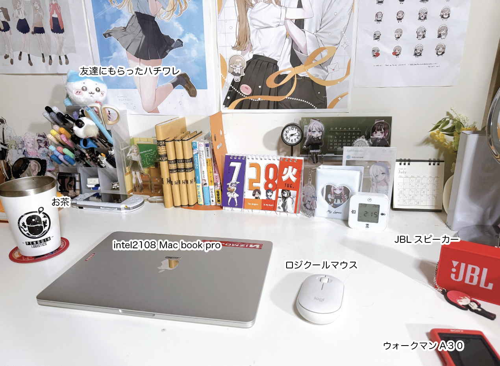
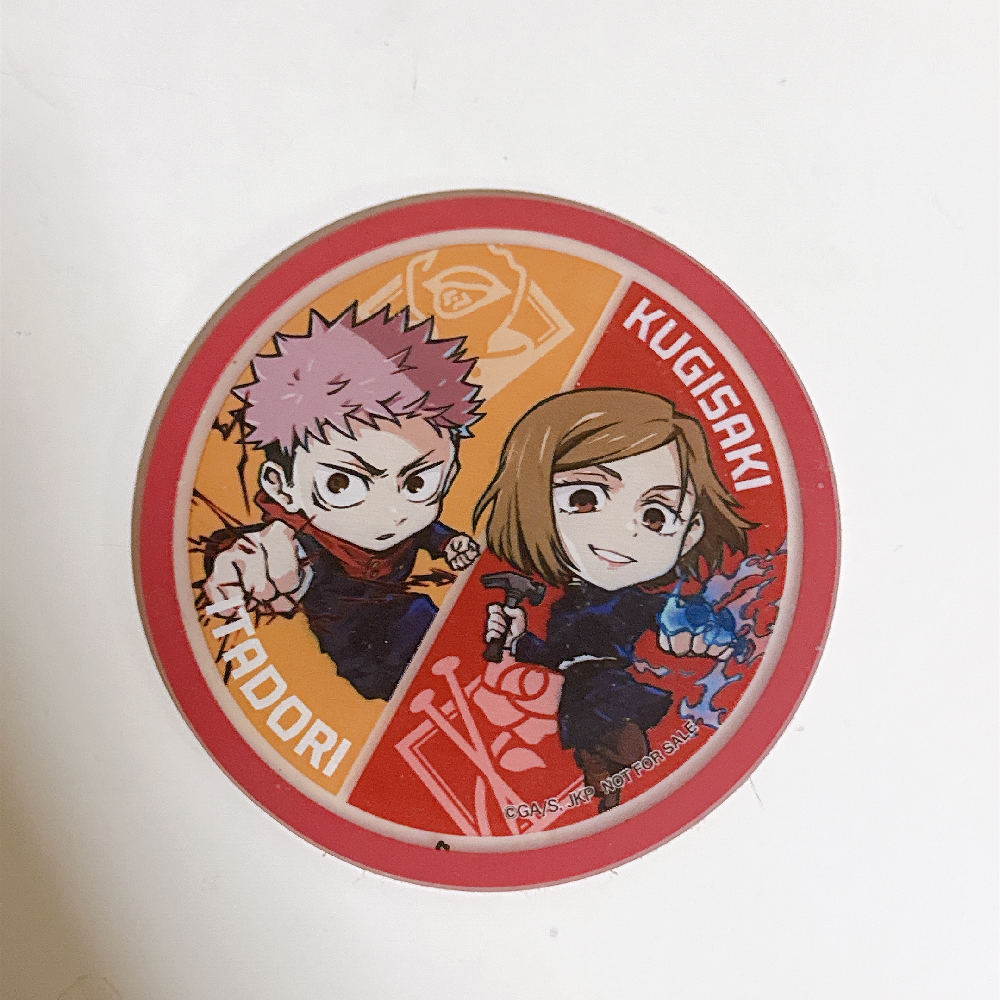
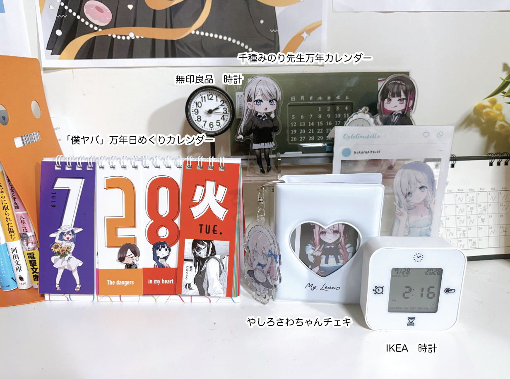
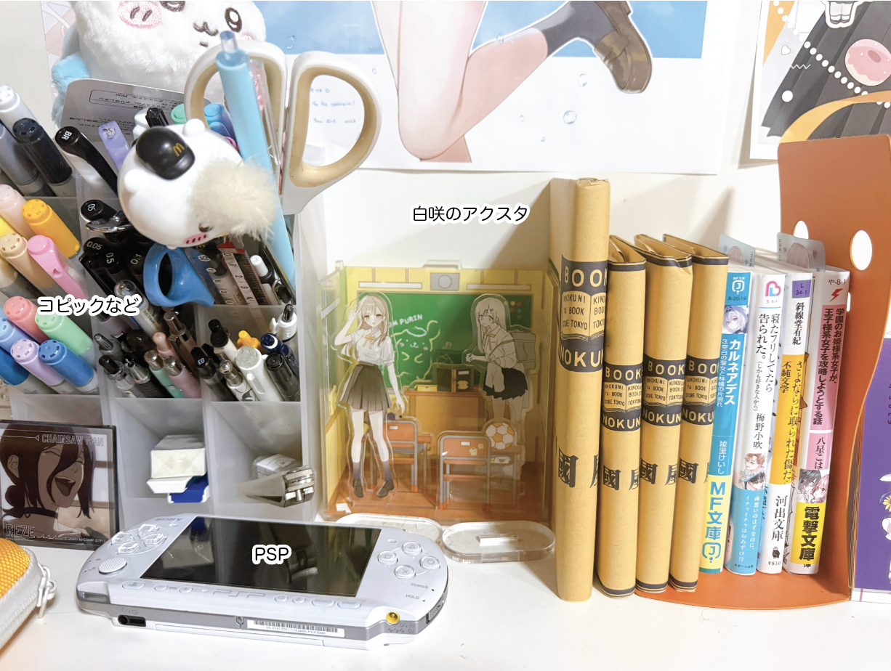
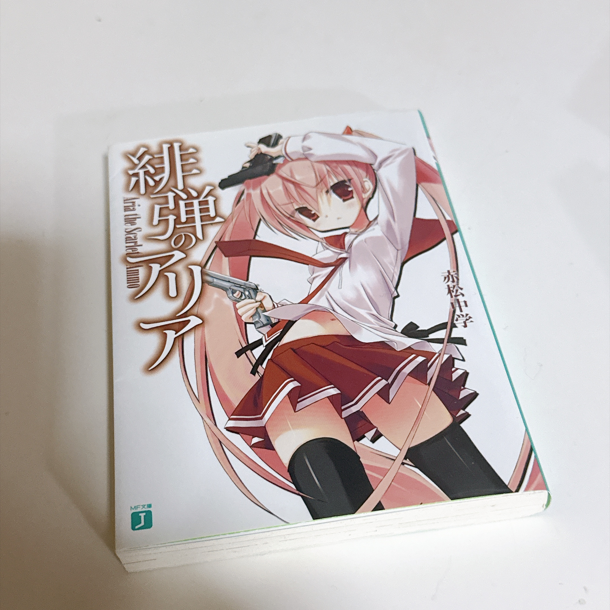
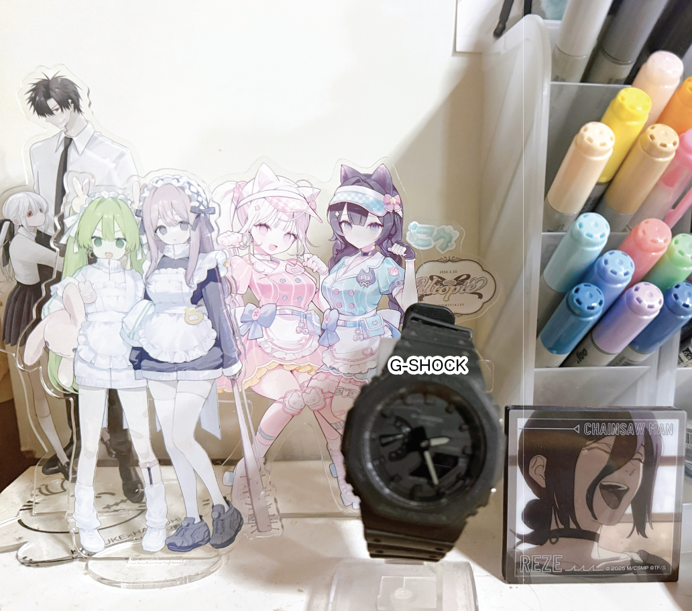

こんにちは、ひなきです。今回はいつもイラストや漫画、小説を書いている作業スペースを紹介します。特別おしゃれな部屋ではありませんが、私にとっては一番落ち着く場所です。
普段どんな環境で創作しているのか、少しでも伝われば嬉しいです。

コーディングの時に使うPCです。専門学校時代に誕生日プレゼントとして買ってもらったもので、もう何年も使い続けています。
学生時代は課題制作で毎日のように使っていたので、いつ壊れるか少しヒヤヒヤしています。
・ウォークマンA30
2016年ごろ買ってもらいました。タッチパネル式のウォークマンです。
米津玄師や藍月なくるさんをよく聴きます。
創作中は音楽が欠かせない存在です。
・お茶
ローソンで売っていたアークナイツのコップです。いい感じにボロボロです。
コースターはくら寿司と呪術廻戦がコラボしてた時のやつです。野薔薇ちゃんが好きなので貰えて嬉しかったです。お茶には氷を入れて飲んでいます。冷たくて美味しいです。
・ハチワレぬいぐるみ
友達に誕生日プレゼントでもらいました。ふわふわで可愛くて癒されます。


コミケの時の作品です。通販で買いました。しのちゃんとれんちゃんが可愛いです。
・「僕の心のヤバいやつ」１３巻特典万年日めくりカレンダー
毎日めくるのが楽しいです。カラフルで可愛いです。
・やしろさわちゃんチェキホルダー
コミティアで何回もガチャしました。アクキーも一緒につけています。
机にあるだけで気分が上がるお気に入りです。

読みかけの本がたくさんあります。紀伊国屋書店を愛しています。
百合からBL。エッセイまで、幅広く読んでいます。
今は緋弾のアリアにハマっています。バディものが好きです。
読みたい本がどんどん増えていくので、積読はなかなか減りません。
・白咲のアクスタ
ポムポムプリンのアクスタボックスに入れています。
右がよういち先生、左がぴろ先生にそれぞれ描いていただいたものです。
・PSP
もっぱらギャルゲー用です。まだまだ現役です。
たまに電源を入れて遊ぶ時間も好きです。
・コピックなど
文房具一式をここにつめています。
シャーペン、ハサミをよく使います。
漫画のネームやラフを描くときは、今でも紙とシャーペンを使うことが多いです。


今はApple Watchを使っているので使っていませんが、初任給で買った思い出の品です。この時計は今でも大切に保管しています。
・アクスタたち
ぴろ先生、よういち先生、BUDO先生、わの先生のアクスタです。癒しです。コミティアの戦利品です
今回は私の創作デスクを紹介してみました。毎日この机に向かって、イラストや漫画、小説、そしてサイト制作をしています。
これからもこの場所から、たくさん作品を生み出していけたら嬉しいです。
最後まで読んでいただき、ありがとうございました！